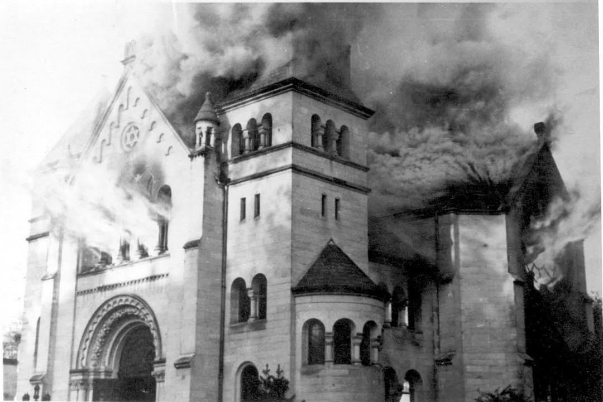
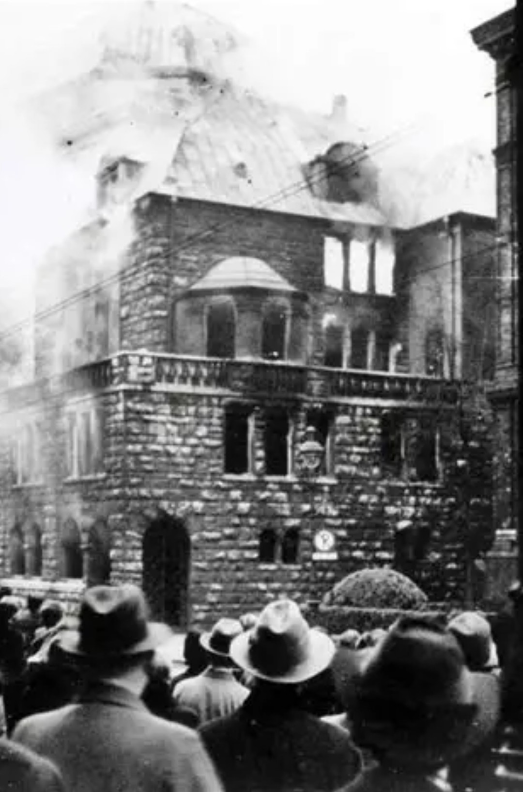
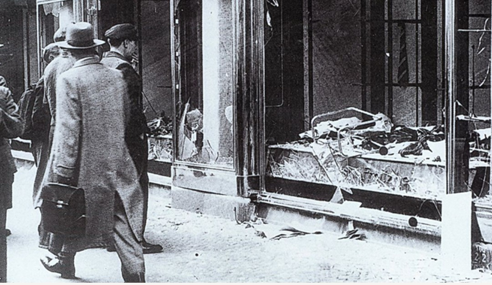

La Nuit de Cristal (Kristallnacht) est un pogrom massif contre les Juifs, organisé par le régime nazi dans la nuit du 9 au 10 novembre 1938. Présentée comme une réaction « spontanée », elle est en réalité planifiée par la direction du parti nazi et les services de sécurité. Synagogues incendiées, commerces saccagés, hommes arrêtés et déportés : cette nuit marque un tournant majeur dans la persécution antijuive.
Le prétexte utilisé par les nazis est l’assassinat du diplomate allemand Ernst vom Rath à Paris par Herschel Grynszpan, un jeune Juif polonais. Le régime exploite cet événement pour lancer une vague de violences coordonnées :
La Nuit de Cristal se déroule dans toute l’Allemagne, en Autriche et dans certaines régions annexées.

Pendant la Nuit de Cristal, environ 1 400 synagogues sont incendiées, détruites ou profanées. Les lieux de culte juifs sont :
La destruction des synagogues vise à effacer la présence religieuse et culturelle juive de l’espace public.

Environ 7 500 commerces juifs sont pillés, saccagés, détruits. Les vitrines brisées jonchent les rues, donnant son nom à la Nuit de Cristal (les éclats de verre sur le sol).
Cette violence économique vise à ruiner la communauté juive et à la exclure de la vie commerciale.
La Nuit de Cristal fait au moins des dizaines de morts parmi les Juifs. Des milliers de personnes sont agressées, humiliées, forcées à nettoyer les rues ou à assister à la destruction de leurs biens.
Environ 26 000 hommes juifs sont arrêtés et envoyés en camps de concentration (Dachau, Buchenwald, Sachsenhausen). Ces arrestations massives marquent une étape vers la déportation systématique.
Le régime nazi présente les violences comme une « réaction populaire », mais les archives montrent une coordination centrale :
Après le pogrom, les autorités imposent à la communauté juive une amende collective d’un milliard de Reichsmarks et accélèrent les lois antijuives.
La Nuit de Cristal marque le passage :
Après 1938, il devient presque impossible pour les Juifs de continuer à vivre en Allemagne. La Nuit de Cristal est souvent considérée comme une préfiguration directe de la Shoah.
Aujourd’hui, la Nuit de Cristal est commémorée comme un moment clé de la destruction des communautés juives d’Europe centrale. Des synagogues ont été reconstruites, d’autres sont devenues des lieux de mémoire, des musées ou des monuments.
La conservation des photographies de synagogues incendiées et de commerces saccagés permet de documenter la violence et de rappeler la nécessité de résister aux discours de haine.